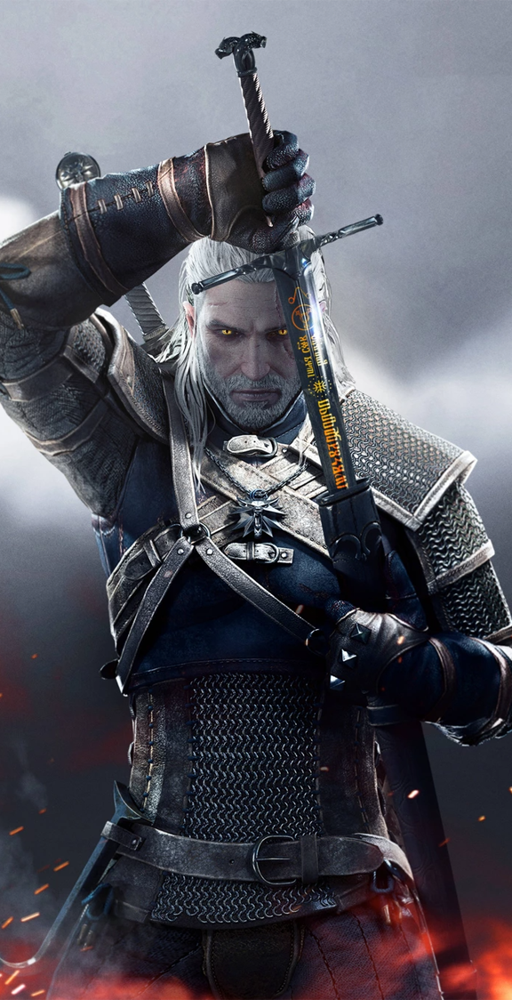
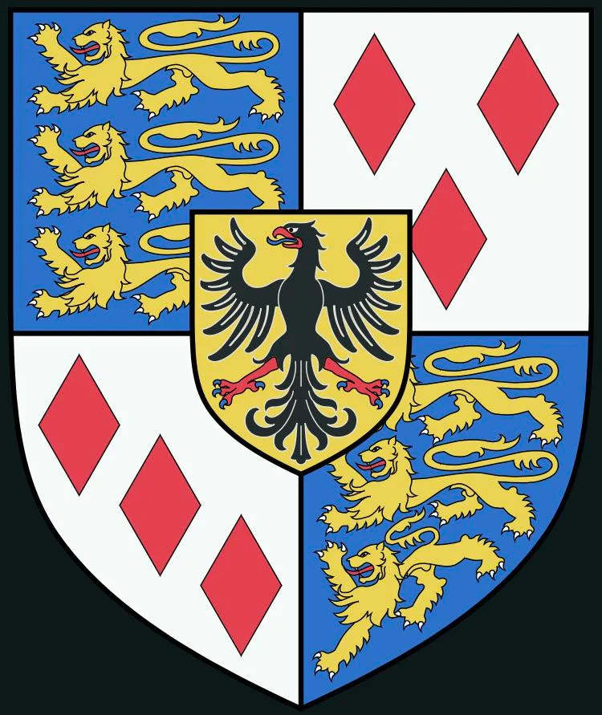
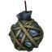
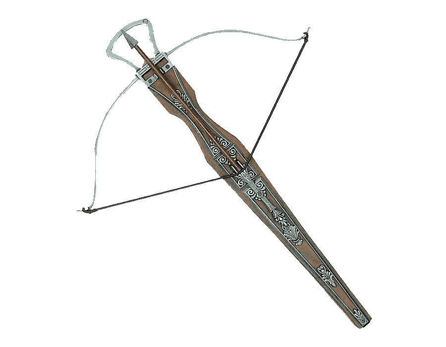
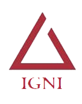
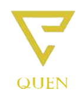
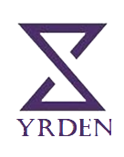

Gerald de Rívia

Rívia
Geralt é o filho da feiticeira Visenna e, ao que tudo indica, do mercenário Korin. Devido a problemas na
gestação,
sua mãe bebeu várias poções para salvá-lo. Logo após seu nascimento, Visenna, enquanto estava sendo
perseguida,
deixou seu filho aos cuidados de Vesemir em Kaer Morhen — reduto dos bruxos da escola do lobo. Lá, ele
iniciou
treinamento para se tornar um bruxo, sobrevivendo a inúmeras mutações durante sessões de experimentos, o
que fez
com que ganhasse capacidades físicas e mentais sobre-humanas com efeitos colaterais mínimos. Geralt
resistiu às
"mudanças" provocadas pelos experimentos melhor do que todos, talvez graças às poções que sua mãe tomou
durante
sua gestação, o que encorajou os seus tutores a realizarem procedimentos experimentais ainda mais
perigosos.
Isso o tornou mais ágil, forte e com melhores reflexos do que todos os outros bruxos, porém, como efeito
colateral,
as mutações fizeram com que ele perdesse toda a pigmentação do corpo. Por causa de sua pele pálida e
cabelos
brancos, ele também é conhecido na língua ancestral como "Gwynbleidd", o Lobo Branco.
Armas:

Espadas de aço

Espadas de prata

Bombas

Crossbow
Sinais:
